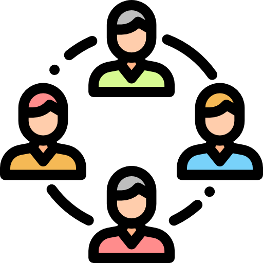

Crear un Proyecto
Es fundamental crear un proyecto, ya que será este el cual se va a asignar a un grupo. En ese sentido, puedes recurrir a la pestaña de Mis Proyectos para conocer toda la información sobre cómo añadir uno nuevo a tu cuenta.

Es fundamental crear un proyecto, ya que será este el cual se va a asignar a un grupo. En ese sentido, puedes recurrir a la pestaña de Mis Proyectos para conocer toda la información sobre cómo añadir uno nuevo a tu cuenta.

Al momento de ingresar a la pantalla de Asignar un Grupo, va a visualizar una lista con los Grupos de Trabajo que ya tiene registrado, independientemente si tiene o no proyectos activos con ellos. En ese sentido, va a tener que elegir uno de ellos mediante un clic. Una vez lo haya hecho, el grupo elegido se va a sombrear de un color diferente para que este seguro de su decisión
De manera opcional va a poder asignar roles a los integrantes de su Grupo de Trabajo dentro del proyecto, tales como coordinador, solamente miembro, vocero, etc. Para ello, va a seleccionar al usuario en la lista y va a desplegar las opciones en la celda de Rol o en su defecto va a poder escribir directamente un rol personalizado para su proyecto